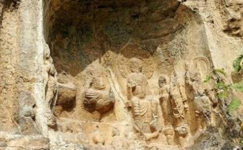

中国历史上有五位帝王向
南北朝时期，北魏太武帝拓跋焘（音：涛，鲜卑族）亲率铁骑踏平四国，一统北方。当时佛法广传，很多人
也许应了“上帝欲使其灭亡，必先使其疯狂”的规律，不听同僚苦劝，极力推动灭佛运动的崔浩，走上了凄惨的结局。崔浩是汉人，自恃功高藐视鲜卑族贵族，他动用巨资把他的书和他主编的国史刻成碑林显扬，暴露国丑，触怒了权贵。帝亲自审问，才华自比张良的崔浩除了承认贪污，竟惶惑不能应对。450年，这位三朝老臣和他三家姻亲被灭族，他死前受刑、受辱，号呼一路[2]，当时人们都说他灭佛遭了
两年后，如日中天的太武帝，竟被宦官杀死，年仅44岁。他两个儿子（太子和恭宗）也相继死于宦官之手。
452年文成帝继位后，即挽回祖父的错误，再兴佛法，
南北朝末期，北周武帝宇文邕（音：拥，鲜卑族）神勇英武，公元575年（32岁）亲征北齐，34岁时再次统一了北方。
574年，宇文邕扬言不怕下
北周灭佛，祸不止此！19岁太子宇文赟（音：晕）继位，残暴荒淫，次年就让位给6岁的儿子，自己专于后宫纵欲，22岁病死。幼子继位，大权落于其外祖父杨坚之手。581年杨坚废北周，建隋朝。不到两年，就灭绝了宇文皇族子孙43个家族，其余宇文宗室基本被遍杀无遗。
遗祸子孙，祖上可免？唐朝吏部
北周武帝的御膳官拔彪，到隋文帝杨坚时还是御膳官，一日暴死，但胸口一直温暖，家人不敢入殓。拔彪三日后醒来说：“带我见皇上，周武帝传话了。”他见杨坚后，说他到阴间见到周武帝受酷刑，武帝跟他说：“你替我传话大隋天子，他以前曾是我的同事，如今国库的金玉布帛，也都是我积蓄的。因为我生前灭佛，现受大苦，请他替我作功德。”于是杨坚通令天下，每家出一钱，为武帝
《隋书》记载：杨坚生在寺院时，紫气满庭。
隋末战乱，历史重演。618年李渊取代隋朝建立了唐朝，犹如他姨夫杨坚代周建隋的翻版，但李渊却没有姨夫信佛的传统。
626年，太史令傅奕七次奏本灭佛，言词激切，李渊不顾绝大多数臣子的反对，五月下诏书：“京城留寺三所观二所。其余天下诸州各留一所。”其它寺庙、道观拆毁，只供养精进的佛、道家
不过，六月份就发生了玄武门事变，李世民亲政，该诏书没能执行。如果不是这样，再灭佛法，大唐盛世的历史恐怕要改写了。
唐太宗海纳百川，气度恢弘，迎来了各邦文明、信仰在大唐交融，在唐初就把经济、文化发展到了世界的巅峰。李世民登基后，曾赐御食婉言规劝傅奕，但傅奕依旧当堂抨击佛法。弄得太宗也没办法。
傅奕曾和傅仁均、薛迹同为太史令，薛迹梦中见死去的傅仁均向他讨要五千钱欠款，薛迹问：那我还给谁啊？傅仁均说：还给泥人。薛迹又问：泥人是谁？答曰：“傅奕！”当时还有人也梦见了故去的傅仁均，梦中问他：傅奕谤佛该当何报？傅仁均也说：“配越州泥人”。薛迹给傅奕还钱时说了这个梦，没几天傅奕暴死。当时人们说：泥人可能喻指泥犁（地狱）中人[6]。
日月星辰在循环中运转，历史也在循环中重演。朝代的变迁，成败兴亡的故事，都在给后人留下借鉴和答案。
北魏太武帝灭佛，44岁暴死，两个儿子被殃及丧命。幸亏孙子挽回损失，带动国家中兴。北周武帝灭佛更甚，35岁暴死，儿孙和整个宇文皇族被灭门，杨坚复兴佛法，随之开创了开皇盛世。唐高祖的灭佛诏，被唐太宗所废止，可谓明智之至。
以古为鉴，可知兴替；以人为鉴，可明得失――唐太宗这句名言可谓人人皆知。那么看到上述灭佛的历史教训之后，后人还会去诽谤佛法、毁人修行、剥夺信仰么？
大部份人不会，但是总会有个别自以为是的人，自负英明，想改变这果报的规律。历史中后来出现的两位这样的帝王，都成了“现身
历史总是在重复中警醒后人，但是总有自作聪明的人，想标新立异，逍遥于规律之外，结果反而重演了历史的教训。
第四位：唐武宗李炎唐武宗李炎信仰道教，26岁时登基。会昌五年八月（845年），在深入清查后，开始大毁佛寺，诏书明令拆除寺庙4,600余所，小寺院4万余所，佛经大量被焚，佛像烧熔铸钱，强令26万多僧尼还俗[7]，古印度和日本和尚也不能幸免。外来的回教、祆教、摩尼教、景教、回纥教也一同遭难，相应寺院被拆，京城女摩尼70人无所栖身，自尽；回纥教徒多半死于被驱逐的途中……史称会昌灭佛。
大唐盛世，也是佛法的盛世，唐朝后期衰落，佛法依然深入人心。武宗灭佛大失民心，有的藩镇节度使根本不执行，竟说：“天子自来毁拆焚烧”[8]。政乱中初有安定，社会稍有好转的“会昌中兴”，在四起的民怨中日渐消退。次年民间即传出武宗灭佛折寿10年、阴曹索命之说[6]。不久武宗突然病死，年仅32岁。
历史循环的规律，又在此时重现了。继位的皇太叔李忱（音：陈，宣宗），登基后的头一件大事就是下诏“平反”[9]，全面恢复寺院僧尼[10]，从此天下修复废庙的斧斤之声，不绝于耳[11]。
宣宗喜欢效法太宗。他恢复佛法，如同太宗登基后废止高祖灭佛的政策。宣宗在位13年，励精图治，民富国兴，承平安定，史称“大中之治”。宣宗也得到了“小太宗”的美誉[11]，史书留芳，为百姓所歌咏。[12]
第五位：后周世宗柴荣雄才大略，被誉为五代时第一明君的后周世宗的柴荣，全面改革，开疆扩土，战无不胜，但为何如此短命？败家毁业于一旦呢？
其实历史已经给出了答案，后来的宋太祖、宋太宗引以为戒，缔造出宋朝的盛世繁荣。
柴荣继位的第二年，955年五月，下诏大毁佛寺。境内佛法寺庙，除了有皇帝题字的可保留外，每县只留一寺，其它尽毁。全国共拆庙30,360所，毁佛像铸钱，近百万僧尼被逼还俗[13][14]。
佛法兴盛的年代，许多人不敢毁佛像，柴荣开释说：“佛是佛，像是像。佛连身上的肉、眼都能施舍，砸佛像铸钱，佛也会同意的”。镇州（今河北石家庄正定县）大悲寺有一尊铜制大
柴荣问过精通术数的王朴：“朕能活几年？”王朴答道：“三十年后非所知也。”柴荣误以为还能活30年，很高兴。而王朴却另有寓意，柴荣在位五年六个月，五六正和三十之意。
959年，柴荣大兵取幽州，契丹沿边城垒皆望风而下，蕃部连夜晚逃遁。车驾至瓦桥关，柴荣登高观六师，问来献酒肉的百姓：“此地何名？”对曰：“历世相传，谓之病龙台。”柴荣默然，立刻上马回奔。当晚发病，胸生恶疮。
柴荣以前曾梦神人送给他大金伞加《道经》一卷，之后才得天下。发病当晚他又梦见那个神人索走了金伞和《道经》，他惊醒后说：“吾梦不祥，岂非天命将去耶！”[14]不久，胸疮溃烂而死。时人传为毁佛砍像之报。
柴荣5岁幼子继位不到1年，被他的禁军统帅赵匡胤夺了江山，落得亡国败家。
几年前柴荣灭佛时，禁军统帅赵匡胤就曾拜访神僧麻衣，赵匡胤说：“现在灭佛毁像，可不是社稷之福。”麻衣说：“难道忘了三武灭佛招来的灾祸么？”赵又问天下何时平定？麻衣说：“辰申间当有真主出，佛法亦大兴矣。”后来赵匡胤登基于庚申年正月甲辰，应验了预言[15]。
吸取了三武灭佛的教训，亲证了柴荣的报应，赵匡胤初登皇位就废止了柴荣灭佛的政策[16]，屡建佛寺、佛像。在当年柴荣亲砍佛像的镇州古刹，971年，赵匡胤下诏扩建龙兴寺，并铸造比原来还高大的
既然历史是在重复中循环而进，今人一定能从历史的教训中找到自己的影子。
三武一宗灭佛，身强力壮的四位帝王灭佛后很快暴死。后继者凡是纠正错误，
自古剥夺信仰的都是以失败和恶报告终，西方的先鉴更加强烈。公元一世纪时，古罗马帝国，为了铲除基督徒的信仰，以国家谣言污蔑基督徒，用谎言去蒙蔽人民参与迫害，后来招致4次大瘟疫席卷全国，约一半人口在瘟疫中丧生，强大的不可一世的古罗马帝国也由此衰亡崩解。
以古为鉴，可知兴替。这里既有朝代的兴替，也有自身的兴替。
参考文献：[1]《魏书·世祖纪》
[2]《魏书·崔浩列传》
[3]《
[4]《隋书·高祖本纪》
[5]《
[6]《
[7]《旧唐书·武宗本纪》
[8]《入唐求法巡礼行记》
[9]《全唐文》卷八十一
[10]《唐会要》卷四十八
[11]《
[12]《旧唐书·宣宗本纪》
[13]《新五代史·周本纪》
[14]《旧五代史·周书·世宗纪》二、六
[15]《佛祖统纪》卷第四十三
[16]《续资治通鉴长篇》